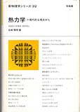

熱力学と統計力学
身近な物質の性質を理解する上で、
これらの分野の理解は欠かせません。
ここ20年の間に
熱力学の教科書の流儀について
大きな変革が起こりましたので
名著と呼ばれていても古い流儀のものをおすすめして良いのかどうか
新しい流儀であっても初学者にやさしいと言えるのかどうか
店長には大きな迷いがあります。
新しい流儀と呼ばれて信頼を集めているのは
ここに並べてある中では
「佐々」「清水」「田崎」の三氏の著書です。
温度やエントロピーの定義の方法を変えて教えることで
従来の流儀に含まれていた曖昧な点や誤解を解消しています。
最初から新しい流儀で学んで
余計な誤解や学び直す二度手間を避けるのも良さそうですし、
あとから新しい流儀に触れて
従来の流儀の不満が解消される感動を味わうというのも
また良さそうにも思えます。
書店入り口へ
初級レベル
初めて学ぶならこれくらいからが無難

単位が取れる熱力学ノート |
単位が取れるなどという軽薄な目的には乗りたくないのですが、熱力学の敷居の高さを考えると こういう人気の教科書から入るのも一つの手ではないかと思うのです。 |

熱・統計力学 (物理入門コース 新装版) |
入門者向けの教科書です。 比較的少ないページ数で熱力学と統計力学の両方を説明しています。 ハードカバーの旧版が中古で安く手に入るかもしれません。 |

熱力学 |
入門者向けのテキストとして、コンパクトで分かりやすいと人気です。 1998年に改訂されていますが、1970年頃から長く生き残っています。 |

熱力学 |
内容の正確さについて不安がありそうなのですが、無難、分かりやすいとして支持があるようです。 |

熱力学入門 |
新しい流儀で説明している教科書です。 田崎の教科書の流儀に似ていると言われています。 ページ数が少ないので読み通しやすいかもしれません。 |

統計力学を学ぶ人のために |
とても分かりやすいです。 統計力学の入門書として、まずこういう易しい書き方の本から入るのも良いかもしれません。 |

熱学入門―マクロからミクロへ |
熱力学と統計力学を説明しています。 大正準集団の説明がないので少し範囲は限定的ではありますが、分かりやすいです。 後半では原子説が認められてゆく歴史的な流れがよく説明されています。 |

よくわかる熱力学 |
毎度おなじみ独学者の味方。 熱力学で遭難した人のためのレスキュー本です。 「新しい流儀」の田崎の教科書に準拠しているので、その点もご安心ください。 |
中級レベル
普通の人はこれくらい読めれば十分

熱力学・統計力学 |
かなり昔から読み続けられている名著です。 |

フェルミ熱力学 |
古くからあり、初学者にもわかりやすいと定評があります。 著者がとても有名であり、その思想に触れられるという魅力もあります。 店長が未読のため、どういう読者層におすすめできるのかが分からないでおります。 |

熱力学の基礎 I（第2版） |
近頃では誰もが第二くらいに推す名著です。 数学的な論理の美しさにこだわった流儀です。 |

熱力学の基礎 II（第2版） |
その下巻です。 第2版への改訂のときに2冊に分かれました。 |
|

熱力学 — 現代的な視点から |
近頃では誰もが第一に推す名著です。 熱を主役にせず、力学的な操作を中心にして論じることで、従来の教科書で陥りがちな誤解を避けています。 |

統計力学 I |
評判などから安心しておすすめできますが、店長が未読のため、気の利いたコメントはできません。 |

統計力学 II |
その下巻です。 |

熱力学・統計力学 熱をめぐる諸相 |
最近出たばかりの本。熱力学と統計力学が一冊にまとまっていてお得。 現代的な流儀で書かれており、安心できます。 |

統計力学 |
|

統計力学 |
古い本ですが、今でも人気なのでこれも置いておきます。 統計力学の教科書が少なめな気がしたもので。 |

例解 熱・統計力学演習 |
基礎的な演習書です。 物理入門演習シリーズの中の一冊です。 ハードカバーの旧版が安く手に入ったりします。 |

大学演習 熱学・統計力学〔修訂版〕 |
かなり古くから生き残っている有名な演習書です。 改訂されているとのことで安心感があります。 |

熱学演習―熱力学 |
近頃復刊した演習書です。 古くなってきた部分もあるのですが、学ぶところも多くあります。 |
上級レベル
マニアならいつかは挑戦してみたい

熱力学および統計物理入門（第2版）（上） |
最近は読む人が減りましたが少し前までは定番の教科書でした。 清水の教科書の流儀に近いと言われています。 |

熱力学および統計物理入門（第2版）（下） |
その下巻です。 残念ながら入手が難しくなっているようです。 |

統計物理学 第3版 上(ランダウ=リフシッツ理論物理学教程 5) |
書影の見た目が同シリーズの他の巻と違っているのは、この第5巻と第9巻だけは岩波書店が版権を持っているからです。 |

統計物理学 第3版 下(ランダウ=リフシッツ理論物理学教程 5) |
その下巻です。 |

量子統計物理学 (ランダウ=リフシッツ理論物理学教程 9) |
ランダウのシリーズの第9巻ですが著者としてランダウが入っていないことでも有名です。 書影の見た目が同シリーズの他の巻と違っているのは、第5巻とこの第9巻だけは岩波書店が版権を持っているからです。 残念ながら絶版で、値段がつり上がっています。図書館で探してみてください。 |